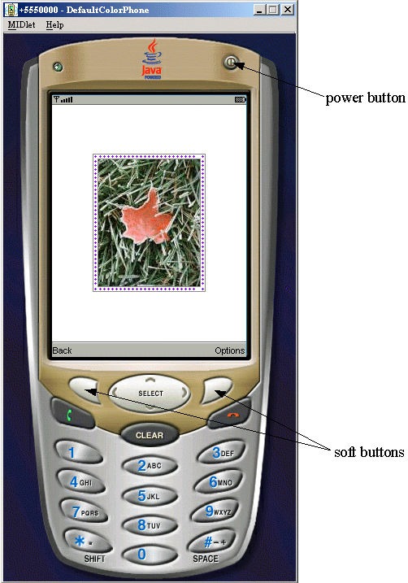
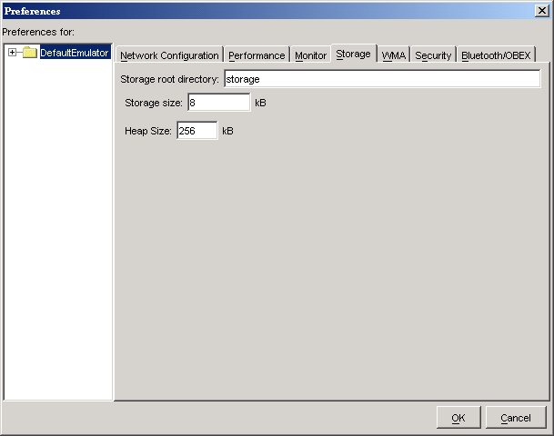
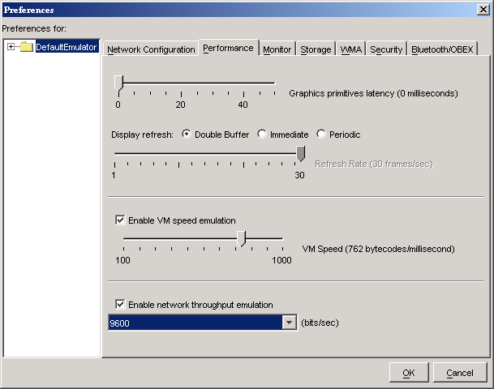

|
|
The J2ME Wireless Toolkit emulator simulates a MIDP device on your desktop computer. It is a convenient way to see how your application performs in a MIDP environment and gives you a tight development cycle that is entirely contained on your desktop computer.
The emulator does not represent a specific device, but it provides correct implementations of its supported APIs.
A skin is a thin layer on top of the emulator implementation that provides it with a certain appearance, screen characteristics, and input controls. The J2ME Wireless Toolkit comes with skins that represent different kinds of devices.
You can create your own emulator skins if you wish. See the Basic Customization Guide for details.
The emulator looks and acts like a mobile phone. In this section you’ll learn how to control the emulator. Although the description and figures are based on the DefaultColorPhone skin, all the skins operate in a similar way.

You can use the mouse to click on the buttons to press them. Most buttons also have keyboard shortcuts, which are generally easier to use. Keyboard numbers 0 through 9 correspond to the emulator’s 0 through 9 buttons. Some less obvious keyboard shortcuts are in the following table.
|
Emulator button
|
Keyboard key
|
|||||||||||||
|---|---|---|---|---|---|---|---|---|---|---|---|---|---|---|
|
Left soft button
|
F1
|
|||||||||||||
|
Right soft button
|
F2
|
|||||||||||||
|
Power button
|
Esc
|
|||||||||||||
|
SELECT
|
Enter
|
|||||||||||||
Entering text works much as it does on many real devices. Press a number key multiple times to get the letter you want. For example, press the 5 key twice for the letter K. When you are entering text, the asterisk key (*) switches between upper case, lower case, numbers, and symbols. The indicator at the top of the screen shows your current mode. The pound key (#) enters a space.
Alternately, you can just type on your keyboard to enter text. Although this is convenient for entering text, you must remember that it is a convenience your users will most likely be lacking.
You can adjust the emulator settings to more closely resemble a specific device or to test your application under different resource conditions.
The emulator uses your desktop network connection. For example, if the emulator runs a MIDlet that makes an HTTP connection, the emulator attempts to make the HTTP connection using the desktop’s network setup.
If your development computer is behind a firewall, you might use a proxy server to make HTTP connections. If you’re not sure, try examining your browser’s settings to see if it uses proxy servers.
If you are using proxy servers, you need to configure the emulator to use the same proxy servers. To do this, choose Edit > Preferences.... On the Network Configuration tab, fill in the names and port numbers for the proxy server you wish to use. You can also select which version of HTTP you wish to use.
The heap is memory where your application’s objects are stored. Many real devices have limited heap size. You can set a maximum heap size to more closely simulate the conditions on a real device. Choose Edit > Preferences... from the KToolbar menu and selecting the Storage tab. Fill in the maximum heap size in the Heap Size field. Remember, one kilobyte (kB) is 1024 bytes.
If you don’t specify a heap size, the default is 2 megabytes.

The emulator has persistent storage, which by default is placed in {toolkit}\appdb\{skin} in files with a .db extension. For example, the persistent storage for the DefaultColorPhone emulator skin is stored in {toolkit}\appdb\DefaultColorPhone. There is no limit on the size of the persistent storage.
DefaultColorPhone might have a file path name of {toolkit}\appdb\DefaultColorPhone.1089982856218.
The toolkit enables you to choose a different location for the storage files, and you can limit the size of the storage. This is useful if you wish to test your application’s behavior when a small amount of persistent storage is available.
To adjust the persistent storage settings, choose Edit > Preferences... and click on the Storage tab. Enter the name of the directory you wish to use for persistent storage. You can only enter a relative path, and the directory you specify is created in the {toolkit}\appdb directory.
If you wish, you can enter a limit in kilobytes for the size of the persistent storage. Bear in mind that the storage implementation has some overhead in addition to the space your application uses. For example, if you enter 8 kB for the persistent storage size, 8192 bytes is available for both your application data and the storage overhead.
If you wish to erase the persistent storage of the emulator, choose File > Utilities... from the KToolbar menu. Click on the Clean Database button to wipe the persistent storage clean.
The emulator uses many of the resources of your desktop computer, including its display and network connection. Compared to the desktop-based emulator, a real MIDP device usually has a slower processor, less memory, and a slower network connection, and might have a different type of display.
The J2ME Wireless Toolkit allows you to simulate the constrained environment of a real device. Although the emulator does not represent a real device, adjusting the performance settings gives you useful information about how your application performs under varying runtime conditions.
Choose Edit > Preferences... and click on the Performance tab.

Adjust the Graphics primitives latency to have an effect on the amount of time that elapses between your application’s calls to drawing methods in the Graphics class and when the drawing actually takes place.
To change the screen characteristics, choose one of the Display refresh types. If you choose a Periodic type, you will also need to specify the Refresh Rate.
To simulate the slower speed of a real device, check Enable VM speed emulation and choose the speed you want.
You can adjust the simulated network speed by checking Enable network throughput emulation and choosing a speed.
MIDlets have a life cycle that is defined by the MIDP specification. MIDlets can be started and stopped by the device. Furthermore, external events like incoming phone calls can cause the device to pause a MIDlet.
The emulator provides a simple mechanism to pause and resume running MIDlets. This is very helpful for testing your application’s behavior when it is paused.
When the emulator is running, choose MIDlet > Pause from the emulator window’s menu. The running MIDlet is paused and the screen displays an “Incoming Call...” message.
To resume the MIDlet’s operation, choose MIDlet > Resume from the menu.
During development, you will most often run the emulator directly from KToolbar by pressing the Run button or using the Project > Run via OTA feature. For testing or demonstrations, you might wish to run the emulator by itself. Several different approaches are described in this section. The program group created by the J2ME Wireless Toolkit installer includes several items that pertain to running the emulator by itself.
To run an application directly, which is analagous to pressing KToolbar’s Run button, choose the Run MIDP Application... item. The toolkit prompts you to locate a MIDlet descriptor file on your local disk. Note that the corresponding MIDlet suite JAR must also be present.
To run the emulator’s Application Management Software (AMS), choose the OTA Provisioning item, which is roughly analagous to KToolbar’s Run via OTA feature. The emulator pops up with the AMS welcome screen, and you can install applications by typing in a URL.
To change the emulator’s preferences, choose the Preferences item from the toolkit program group. This pulls up the same preferences window as choosing Edit > Preferences... from the KToolbar menu.
The J2ME Wireless Toolkit utilities are also accessible without running KToolbar. Just choose the Utilities item.
Finally, you can change which emulator skin is used by default. Choose the Default Device Selection item, and choose one of the available emulator skins. Next time you launch the emulator the selected skin is used.
You can also run the emulator from a command prompt. See Appendix B, “Command Line Reference,” for more information.
Third party companies, like device manufacturers and wireless carriers, sometimes create device emulators that are compatible with the J2ME Wireless Toolkit. You can gain experience running your application on a wider variety of implementations by installing additional emulators into the toolkit. The procedure is usually to unpack or install the third party emulator, then copy its directory into the <toolkit>/wtklib/devices directory. Next time you run KToolbar, the emulator is available.
A partial listing of some of the currently available emulators is available here:
http://developers.sun.com/techtopics/mobility/midp/articles/emulators/
|
|
J2ME Wireless Toolkit User's Guide J2ME Wireless Toolkit 2.2 |
Copyright © 2004 Sun Microsystems, Inc. All rights reserved. Use is subject to the license terms.